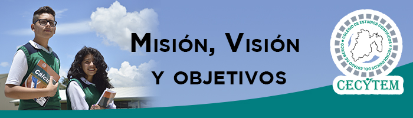

Colegio De Estudios Científicos y Tecnológicos Del Estado De México
Nombre del Alumno: Isaac Claudio Hernández Grupo: 402
Nombre de la docente: Celia Romero Pichardo
Grupo: 402 N.L:05 Carrera: Programación
|
Visión
Ser la mejor opción en educación media superior en su modalidad de bachillerato tecnológico bivalente en el Sistema
Nacional de los CECyTE’s, así como en el Estado de México.
Objetivos
1. Impartir educación media superior terminal, terminal por convenio y bivalente de carácter tecnológico.
2. Promover un mejor aprovechamiento social de los recursos naturales y contribuir a su utilización racional.
3. Reforzar el proceso de enseñanza-aprendizaje con actividades curriculares y extracurriculares debidamente
planeadas y ejecutadas.
4. Promover y difundir la actitud crítica derivada de la verdad científica, la previsión y búsqueda del futuro con
base en el objeto de nuestra realidad y valores nacionales.
5. Promover la cultura estatal, nacional y universal, especialmente la de carácter tecnológico.
6. Realizar programas de vinculación con los sectores público, privado y social que contribuyan a la
consolidación del desarrollo tecnológico y social de ser humano.
7. Elevar la calidad educativa de forma permanente.
8. Ampliar la cobertura social y territorial en favor de la juventud del Estado de México.
9. Innovar y diversificar la ofert
|
| 
|
|